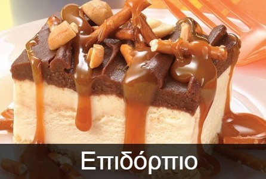

Μενού

Τα ορεκτικά έχουν την τιμητική τους στα τραπέζια. Πριν το κυρίως πιάτο όλοι λατρεύουμε να τσιμπάμε λίγο από τα ορεκτικά. Δεν λείπουν από κανένα τραπέζι και ταιριάζουν σε όλα γούστα.

Οι σαλάτες είναι η ιδανική λύση γεύση για κάθε ώρα! Είναι το πρώτο πράγμα που ζητάει ο ουρανίσκος. Η γεύση που καλωσορίζει όλα τα υπόλοιπα φαγητά που υπάρχουν στο τραπέζι.

Συνοδεύστε το γεύμα σας με το πιο νόστιμο σούσι της πόλης παρασκευασμένο από εξειδιξευμένους Chefs

Ο βασιλιάς ενός τραπεζιού είναι το κυρίως πιάτο και όλα τα υπόλοιπα υπάρχουν για να το συνοδεύσουν και να ταιριάξουν γευστικά μαζί του. Τα κυρίως πιάτα πάντα κλέβουν την παράσταση κι όλη η επιτυχία ενός καλού τραπεζιού εξαρτάται από αυτά.

Με τι θα μπορούσε να κλείσει ένα ολοκληρωμένο και απολαυστικό γεύμα? Φυσικά με ένα απολαυστικό επιδόρπιο. Άλλωστε πάντα υπάρχει χώρος για ένα καλό γλυκό.